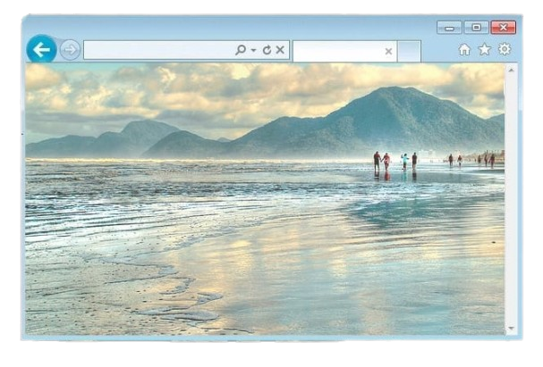
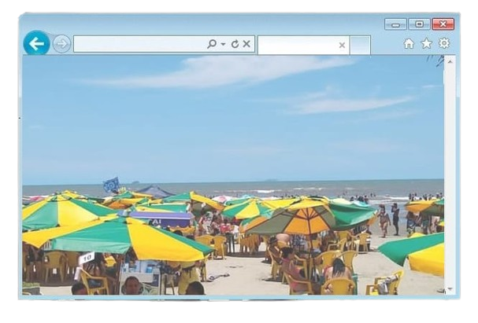

População: ~70 mil habitantes Localização: litoral de São Paulo (Baixada Santista) Bioma: Mata Atlântica Fundação: município criado em 1959 Aniversário: 18 de fevereiro Característica: estância balneária e ecológica

A região de Peruíbe era habitada por povos indígenas muito antes da
chegada dos colonizadores europeus, que viviam da pesca, da caça e da
coleta, utilizando de forma equilibrada os recursos naturais da
região.
Durante o período colonial, a área esteve ligada ao
desenvolvimento inicial do litoral paulista, integrando rotas de
circulação entre importantes núcleos como Itanhaém e outras
localidades da costa.
Apesar disso, por muitos anos permaneceu com
baixa ocupação e características predominantemente naturais.
Foi
somente ao longo do século XX que Peruíbe passou por um crescimento
mais significativo, impulsionado principalmente pelo turismo.
Suas
praias, áreas de Mata Atlântica preservada e o acesso facilitado
atraíram visitantes e estimularam o desenvolvimento urbano e econômico
da região.
Em 1959, Peruíbe conquistou sua emancipação
político-administrativa, tornando-se oficialmente um município
independente.
Desde então, a cidade se consolidou como um importante
destino turístico do litoral sul paulista, destacando-se também por
suas áreas de preservação ambiental e qualidade de vida.

Economia baseada no turismo e comércio Destaque para o ecoturismo
Praias, trilhas e reservas naturais atraem visitantes Movimento
turístico maior no verão
População urbana em crescimento Economia influenciada pela
sazonalidade do turismo Desafios sociais ligados ao desenvolvimento
urbano Aumento populacional na alta temporada
Grande área de Mata Atlântica preservada Presença de praias, rios e
cachoeiras Áreas de proteção ambiental Relevo com planície litorânea
e Serra do Mar
Estação Ecológica Juréia-Itatins Ruínas do Abarebebê Praias extensas
e preservadas Cachoeiras e trilhas ecológicas